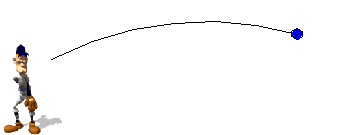

In this simulation we look for the initial angle of throw that will make a ball travel the longest possible distance.
The motion of the ball is a composition of the uniform motion in the horizontal direction and the uniformly accellerated motion in the vertical direction.

Simulation adapted from the book (in Spanish)
Creación de Simulaciones Interactivas en Java.
Aplicación para la Enseñanza de las Ciencias.
F.
Esquembre
(C) Pearson Educación 2004.